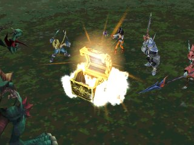
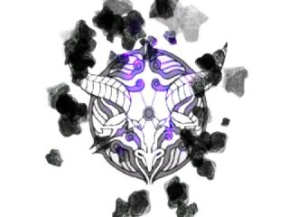
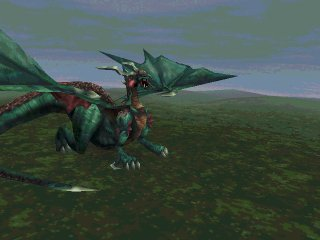
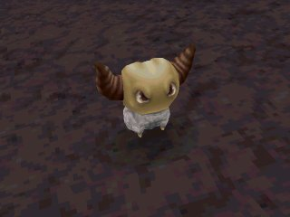

|
Trick
- Best Attack
- Best Level Up
- How
to Restore HP without Cure
Best Attack
Zidane

Thievery MP
8 (Deals physical damage to the target)
พลังโจมตีของท่า Thievery จะขึ้นอยู่กับจำนวนครั้งที่ใช้ท่า "Steal"
โดยพลังโจมตีเริ่มต้นจะอยู่ที่ประมาณ 3,900 และจะเพิ่มขึ้นประมาณ 13-15 เมื่อใช้ท่า
"ขโมย"
เช่น "ขโมย" ไป 10 ครั้ง พลังโจมตีก็จะเพิ่มขึ้นประมาณ 130-150
รวมเป็น มีพลังโจมตี 4,030 ถึง 4,050 damage
ดังนั้น หากใช้ท่า "ขโมย" ไปประมาณ 600 กว่าครั้ง ก็จะทำให้มีพลังโจมตีถึง
9,999 ได้
Vivi
Doomsday
MP 72 (Causes Shadow damage to all targets)
Doomsday จะโจมตีเป้าหมายทั้งหมดด้วยธาตุ Shadow ซึ่งรวมทั้งตัวละครของเราด้วย
วิธีป้องกันคือ สวมใส่อุปกรณ์ที่สามารถป้องกันธาตุ Shadow ได้
หรือหากมีอุปกรณ์ที่สามารถดูดซับ (Absorb) ธาตุ Shadow ได้
ก็สามารถที่จะเพิ่ม HP ได้ พร้อมกับโจมตีศัตรู
อุปกรณ์ที่สามารถดูดซับธาตุ Shadow ได้ มีความสำคัญค่อนข้างมาก
เนื่องจากศัตรูระดับ Boss หลายตัวที่สามารถโจมตีด้วย Doomsday ได้
เช่น Hades, Ozma
หากสามารถเปลี่ยนการโจมตีนั้นเป็นการเพิ่ม HP ก็จะเป็นการดี
อุปกรณ์ที่สามารถดูดซับธาตุ Shadow ได้ เช่น
- PUMICE PIECE (Accessary) Absorbs Holy/Shadow
Useable by All
- EGOIST'S ARMLET (Armlet) Reduces Shadow damage by 100%
Useable by Zidane, Vivi, Dagger, Eiko, Quina, and Amarant
- NINJA GEAR (Armour) Absorbs Shadow
Useable by Zidane and Amarant
Garnet
Atomos MP
32 (Non-Elemental Attack / All)
Atomos จะโจมตีโดยการลด HP ของศัตรูลงเป็นเปอร์เซ็นต์ ซึ่งมีสูตรในการคำนวณ
คือ
Full animation = (30 + # of Amethysts)% of enemy's HP
Short animation = 2/3 of Full animation
คือ จะสามารถลด HP ของศัตรูลงได้อย่างแน่นอนคือ 30 เปอร์เซ็นต์
แต่หากมี Amethyst อยู่ในช่องเก็บ item จะเป็นการเพิ่มพลังโจมตีของ Atomos
ได้
ควรมี Amethyst ให้เต็มจะเป็นการดี คือ มี 99 อัน สามารถสร้างความเสียหายได้สูงสุดถึง
9,999
Amethyst สามารถสร้างได้จากช่างตีอาวุธ โดยมีส่วนผสมดังนี้
Amethyst ได้จาก Ore + Annoyntment และใช้เงิน 200 Gil
(สามารถให้ Hades สร้างให้ได้ หรือช่างที่เมือง
Daguerreo และ Black Mage Village)
Freya
Dragon's
Chest MP 16 (Deals physical damage to the enemy)

พลังโจมตีของท่า Dragon's Chest จะขึ้นอยู่กับจำนวน "มังกร"
ที่สมาชิกในทีมฆ่าไป
เมื่อฆ่าศัตรูจำพวก "มังกร" ไป 1 ตัว ก็จะทำให้พลังโจมตีของท่านี้เพิ่มขึ้น
โดยพลังโจมตีจะเพิ่มขึ้นเป็นจำนวนเลขยกกำลัง 2
เช่น ฆ่า "มังกร" ไป 10 ตัว ก็จะเท่ากับ 10 ยกกำลัง 2 เท่ากับ
100 damage
หากฆ่า "มังกร" ไป 100 ตัว ทำให้มีพลังโจมตีสูงถึง 100 ยกกำลัง
2 เท่ากับ 10,000 หรือ 9,999 damage
Best
Level Up
มังกรที่แนะนำให้ไปเก็บคือ
Grand Dragon

Lv. 60
HP 13,206
MP 2,550
Type : Dragon
Weak : Ice
Eat : Lv3 Def-less
Steal : Tent, Ether, Rising Sun
Note :
จะเจอ Grand Dragon ได้ตั้งแต่แผ่น 1
สถานที่ที่สามารถเจอ Grand Dragon ได้คือ บริเวณเกาะเล็กๆ ทางตอนใต้ของแผนที่โลกแทบทุกเกาะ
หรือที่แรกสุดที่สามารถเจอได้ก็คือ บริเวณเหนือถ้ำ Gizamaluke (ทางผ่านก่อนไป
Burmicia)
จะเห็นได้ว่า Grand Dragon มี HP ที่สูงมาก
แต่การจะฆ่า เป็นเรื่องง่าย หากให้ Quina ใช้ Lv5-Death
หากช่วงแรกยังไม่มี Lv5-Death แต่ต้องการเก็บ Exp จาก Grand Dragon
สามารถทำได้เมื่อมีความสามารถ Auto-Reflect
เมื่อสวมใส่ Auto-Reflect จะสะท้อน Thunder ที่ Grand Dragon โจมตีมา
(Auto-Reflect เรียนรู้ได้จาก REFLECT RING)
แต่อาจโดนโจมตีแบบธรรมดาได้
หากมี Auto-Reflect ครบทั้ง 4 คน จะสามารถปราบ Grand Dragon ได้อย่างไม่ยากนัก
หากใครตาย ก็ใช้ PhoenixDown ชุบชีวิตขึ้นมา
ไม่ต้องเติม HP เพราะหากโดน Grand Dragon ตบทีเดียว แม้ HP จะเยอะ ก็ตายอยู่ดี
Grand Dragon ให้ Exp เยอะมาก ถึง 35,208 หน่วย
Yan

Lv. 72
HP 19,465
MP 3,378
Type : -
Weak : Shadow
Eat : Auto-Life
Steal : Ore, Elixer
Note :
สามารถเจอ Yan ได้บนเกาะด้านล่างซ้ายของ Iifa Tree เมื่อมีเรือเหาะ หรือ
Chocobo สีทอง
Yan ให้ Exp สูงมากถึง 42,673 ต่อตัว ซึ่งบางครั้งอาจเจอได้สูงถึง 3 ตัว
ต่อ 1 การต่อสู้
แต่ Yan มีการโจมตีที่หนักหน่วงมาก คือ Comet และสามารถ Counter ได้อีกด้วย
บางครั้งจะเจอ Snort ทำให้ตัวละครหลุดออกจากการต่อสู้ 1 ตัว
หรือเจอ Virus Powder ทำให้ตัวละครติด Virus ซึ่งทำให้ไม่ได้รับ Exp
การต่อสู้กับ Yan ควรนำตัวละครที่แข็งแกร่งมาต่อสู้ด้วย
ให้โจมตีด้วยท่าที่สามารถสร้างความเสียหายได้อย่างสม่ำเสมอ
เช่น Zidane ใช้ Thievery, Freya ใช้ Dragon's Chest
Steiner ใช้ Shock หรือ Claimhazard เพื่อโจมตีได้ครั้งละหลายตัว
Garnet ใช้ Atomos แต่ต้องมี Amethyst เก็บไว้เป็นจำนวนมากเพื่อให้ทำความเสียหายได้ถึง
9,999
Ability ที่ควรสวมใส่คือ Auto-Life ซึ่งสำคัญมาก เพราะ Yan สามารถทำให้ตัวละครตายได้ตลอดเวลา
How
to Restore HP without Cure
ตัวละครที่สามารถเติม HP ได้ก็มี Garnet และ Eiko ที่ใช้ Skill
Cure
หากไม่สามารถใช้ตัวละครทั้งสองได้ อาจต้องพึ่งพา Potion แต่จะเป็นการสิ้นเปลือง
เพราะตัวละครอื่นๆ ก็สามารถฟื้นฟู HP ได้เช่นกัน
- Quina
White Wind MP 14 (Restores
HP of all party members)
เป็น Skill ที่ดี ใช้ง่าย สามารถเติม HP ได้ทุกคนในคราวเดียว
นอกเหนือจาก Skill นี้แล้ว Quina ยังมี Skill ช่วยเหลือที่ดีอีกมากมาย ไม่ว่าจะเป็น
Vanish MP 8 (Makes a party
member disappear)
ทำให้ตัวละครล่องหน ไม่โดนการโจมตีทางกายภาพ
Auto-Life MP 14 (Casts
Life when KO)
ชุบชีวิตตัวละครเมื่อตาย
Angels Snack
MP 4 (Uses Remedy on all party members)
แก้อาการผิดปรกติทุกอย่างให้กับทุกคนในคราวเดียว
Mighty Guard MP 64
(Casts Shell and Protect on all party members)
เพิ่มพลังป้องกันทั้งทางด้านกายภาพ และด้านเวทย์มนต์ให้กับทุกคนในคราวเดียว
Quina เป็นตัวละคร Support ที่ดี ทั้งในการรุกและการรับ หากรู้จักใช้ให้ถูกจังหวะ
นอกจาก Skill Support แล้ว ยังมี Skill จู่โจมศัตรูอีกเช่น
LvX ต่างๆ ไม่ว่าจะเป็น Lv5
Death, Lv4 Holy, Lv3 Def-less
ในการใช้ LvX นี้ จำเป็นต้องศึกษาศัตรูก่อน ว่ามี Level อะไร จึงจะสามารถใช้ได้ถูกสถานการณ์
Bad Breath MP 16 (Causes
Confuse, Darkness,
Poison, Slow, and Mini to the enemy)
Skill นี้จู่โจมศัตรูโดยทำให้เกิดการผิดปรกติต่างๆ มากมาย ช่วยให้ต่อสู้ได้ง่ายมากขึ้น
Magic Hammer
MP 2 (Reduces the enemys MP)
ลด MP ของศัตรู เป็น Skill ที่ดีมาก หากศัตรูเป็นพวกใช้ MP ในการต่อสู้
- Freya
Freya มี Skill Support อยู่ไม่มาก แต่ก็มีประโยชน์
Reis's Wind MP 12 (Cast
Regen on all party members)
ใช้ Skill Regen กับทุกคนในคราวเดียวกัน ทำให้ HP ค่อยๆ เพิ่มทีละนิด
White Draw MP 36 (Restore
MP to all party members)
เพิ่ม MP ให้แก่สมาชิกทุกคนในคราวเดียว
Six Dragons MP 28 (See
its with yourself)
เป็น Skill ที่จะสุ่มสิ่งที่เกิดขึ้น คือ
เพิ่ม HP ทุกคนเต็ม หรือ ลด HP ทุกคนเหลือ 1
เพิ่ม MP ทุกคนเต็ม หรือ ลด MP ทุกคนเหลือ 1
เพิ่มทั้ง HP และ MP ทุกคนเต็ม หรือ ลดทั้ง HP และ MP ทุกคนเหลือ 1
หรือ ไม่มีอะไรเกิดขึ้นเลย เป็น Skill ที่ไม่แนะนำให้ใช้เป็นดีที่สุด
- Amarant
แม้ Amarant จะเป็นพวกต่อสู้ แต่เขาก็มี Skill Support อยู่เช่นกัน
Chakra MP 4 (Restore HP
and MP on party member)
ฟื้นฟู HP และ MP แก่สมาชิกในกลุ่ม 1 คน
Aura MP 12 (Cast Auto-Life
and Regen on patry member)
ทำให้ HP ค่อยๆ เพิ่มทีละนิด และเมื่อตายจะชุบชีวิตอัตโนมัติ
Revive MP 20 (Revive party
member when KO)
ชุบชีวิตตัวละครที่ตาย
จะเห็นได้ว่า Amarant มี Skill Support ที่ครบถ้วน ไม่ว่าจะเป็นการฟื้นฟู
HP หรือชุบชีวิต
อีกทั้งเมื่อเขาอยู่ในสภาวะ Trance จะสามารถใช้ Skill กับทุกคนได้ในคราวเดียวกัน
- Steiner
แม้ว่า Steiner จะไม่มี Skill ที่สามารถใช้ Support ได้
แต่เขาก็มี Bloodsword ซึ่งเป็นดาบที่สามารถดูด
HP ของศัตรูได้
- Zidane
ตัวละครหลักของกลุ่ม แม้จะมีอาชีพขโมย แต่มีพลังโจมตีรุนแรงมาก
มี Skill Support ที่ดีอยู่ คือ
Sacrifice MP 32
(Die for restore HP and MP to all party member)
สละชีวิต เพื่อเพิ่ม HP และ MP ให้กับทุกคนในคราวเดียว
|